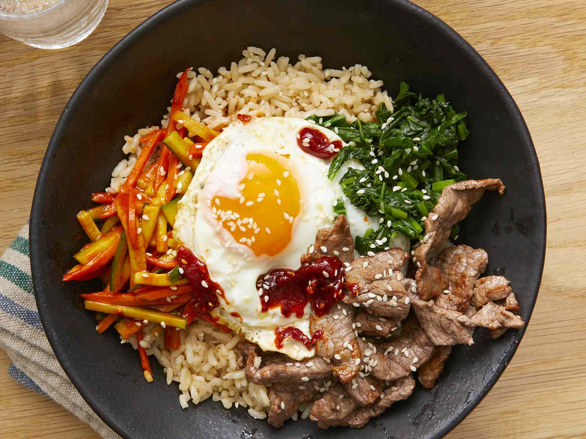

Bibimbap (Korean Rice With Mixed Vegetables)

This bibimbap recipe makes a popular and delicious Korean meal. Meaning mixed rice, bibimbap is a delicious rice bowl topped with vegetables, beef, a whole egg, and gochujang (red chili pepper paste). Traditionally, bibimbap was eaten on the eve of the Lunar New Year, to use up any leftovers before the start of the new year.
Ingredients
- 1 English cucumber, cut into matchsticks
- ¼ cup gochujang (Korean hot pepper paste) (Optional)
- 1 bunch fresh spinach, cut into thin strips
- 1 tablespoon soy sauce
- 2 teaspoons olive oil, divided
- 2 carrots, cut into matchsticks
- 1 clove garlic, minced
- 1 pinch red pepper flakes
- 1 pound thinly-sliced beef top round steak
- 4 large eggs
- 4 cups cooked white rice
- 4 teaspoons toasted sesame oil, divided
- 1 teaspoon sesame seeds
- 2 teaspoons gochujang (Korean hot pepper paste), divided (Optional)
Directions
- Stir the cucumber pieces and gochujang together in a bowl.
- Cook the spinach until bright green and wilted.
- Drain the spinach, squeeze out as much moisture as possible, and set aside.
- Cook the carrots until soft, then stir in the cucumber mixture and red pepper flakes.
- Brown the beef in a different skillet and set aside.
- Fry the eggs until the yolks are runny, but whites are firm.
- Top each serving of rice with the spinach mixture, beef, and the cucumber mixture.
- Place an egg atop each serving, then drizzle with sesame oil, sesame seeds, and gochujang (if desired).